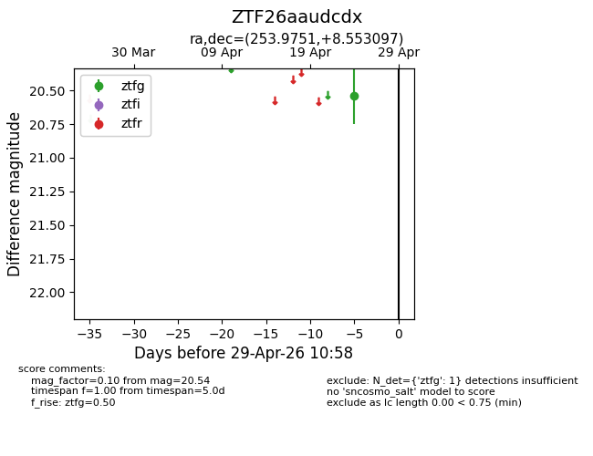
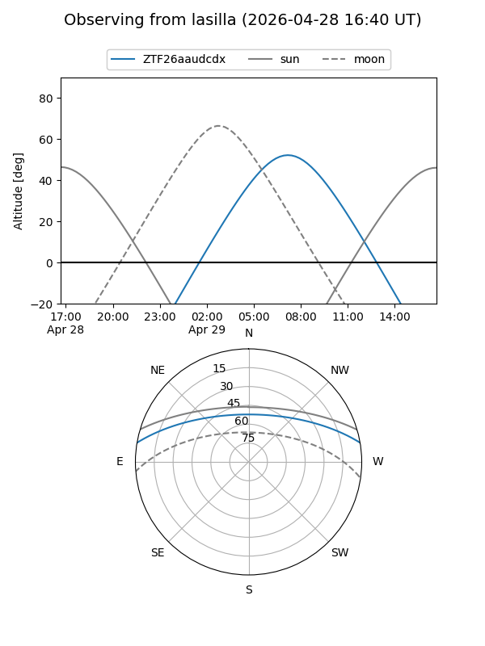
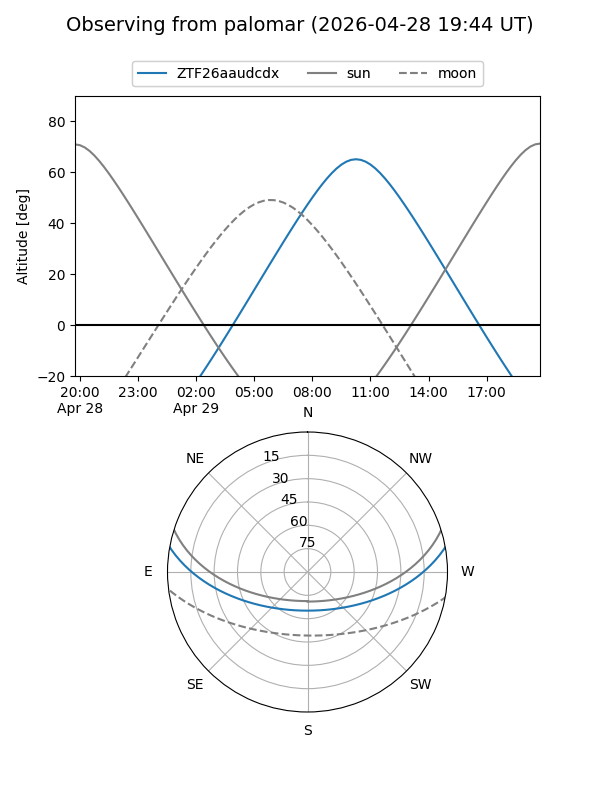

ZTF26aaudcdx
Target ZTF26aaudcdx at 2026-04-29 11:01
Aliases and brokers:
FINK: link
Lasair: link
ALeRCE: link
alt names
ZTF26aaudcdx (ztf,fink_ztf)
Coordinates:
equatorial (ra, dec) = 253.9751,+8.55310
equatorial (HMS+DMS) = 16:55:54.02,+08:33:11.15
galactic (l, b) = (27.2960,+29.53391)
Flags:
Photometry:
last ztfg=20.54
1 ztfg detections
Lightcurve

Visibility


Additional plots